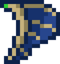

Season 21 of the MFL opened with a shootout. Five games produced 394 points, and no game was decided by fewer than 16. The loudest result came from the Axolotls, who beat the Guardians 74-35 behind one of the biggest passing days the league has seen.
eennvy completed 37 of 65 passes for 946 yards and 10 touchdowns, with a 128.4 QBR, and picked off 3 passes on defense for good measure. His 211.5 fantasy points led the league by 45. His top target, Mbz_, caught 22 passes for 647 yards and 8 touchdowns.
Winners
Axolotls. 74 points, a +39 differential and the No. 1 spot in the MSSN power rankings. They rank first in all three units after one week: quarterbacks, receivers and defense. The defense added 5 sacks and 7 interceptions.
Magmas. A 60-24 win over the Gators, powered by MVP beefourr: 518 passing yards, 8 touchdowns and 2 interceptions, plus 3 interceptions of his own on defense. The Magmas debut at No. 2.
Breeze. They allowed only 13 points in a 30-13 win over the Polar Bears, the fewest points any team gave up in week 1. MVP 1of1___ did it on both sides: 234 receiving yards and 3 touchdowns, plus 2 sacks.
Blazes. A 44-18 win over the Dragons with the league's best ground game (81 rushing yards and 2 rushing touchdowns) and a defense that intercepted 6 passes and scored a touchdown. Vx3sty was named MVP.
Losers
Guardians. They allowed 74 points and threw 7 interceptions. The frustrating part is the offense did plenty: slicksters caught 11 passes for 536 yards and 5 touchdowns, and BradTheCool threw for 615 yards.
Gators. Held without a sack and handed the ball away 7 times in a 60-24 loss. They start No. 8.
Dragons. Six interceptions thrown and 18 points scored in the loss to the Blazes. They rank last among quarterback rooms after week 1.
Polar Bears. Their 13 points were the fewest of the week, and they managed just 1 passing touchdown.
Scoreboard
| Matchup | Score | MVP |
|---|---|---|
Axolotls at  Guardians Guardians | Axolotls 74-35 | E eennvy eennvy |
 Polar Bears at Polar Bears at  Breeze Breeze | Breeze 30-13 | 1 1of1___ 1of1___ |
 Phantoms at Ghasts Ghasts | Ghasts 56-40 | H Henryvz Henryvz |
 Dragons at Dragons at  Blazes Blazes | Blazes 44-18 | V Vx3sty Vx3sty |
 Magmas at Magmas at  Gators Gators | Magmas 60-24 | B beefourr beefourr |
Power Rankings
| # | Team | Record | Move | Take |
|---|---|---|---|---|
| 1 | Axolotls | 1-0 | NEW | No. 1 at quarterback, receiver and defense. |
| 2 | Magmas | 1-0 | NEW | A +36 opener and a quarterback who also picks off passes. |
| 3 | Blazes | 1-0 | NEW | The best run game in the league and a defensive touchdown. |
| 4 | Breeze | 1-0 | NEW | Fewest points allowed in week 1. |
| 5 | Ghasts | 1-0 | NEW | Won a 96-point shootout with the Phantoms. |
| 6 | Phantoms | 0-1 | NEW | Scored 40 and still lost; 6 interceptions thrown hurt. |
| 7 | Polar Bears | 0-1 | NEW | The defense had 5 sacks. The offense needs more than 13 points. |
| 8 | Gators | 0-1 | NEW | No sacks and 7 turnovers through the air. |
| 9 | Dragons | 0-1 | NEW | Six interceptions thrown in a 26-point loss. |
| 10 | Guardians | 0-1 | NEW | 705 passing yards couldn't cover 74 points allowed. |
Positional Power Rankings
Quarterbacks
| # | Player | Team | Stats |
|---|---|---|---|
| 1 | Eeennvy | Axolotls | 37/65, 946 yds, 10 TD, 2 INT, 128.4 QBR |
| 2 | Bbeefourr | Magmas | 26/46, 518 yds, 8 TD, 2 INT, 117.6 QBR |
| 3 | B BradTheCool BradTheCool | Guardians | 21/49, 615 yds, 4 TD, 7 INT, 77.5 QBR |
| 4 | HHenryvz | Phantoms | 25/61, 496 yds, 6 TD, 6 INT, 63.3 QBR |
| 5 | D Dead_Rr Dead_Rr | Gators | 19/52, 500 yds, 4 TD, 6 INT, 58.7 QBR |
eennvy and beefourr were the only quarterbacks in the top five to throw more than twice as many touchdowns as interceptions.
Receivers
| # | Player | Team | Stats |
|---|---|---|---|
| 1 | M Mbz_ Mbz_ | Axolotls | 22 rec, 647 yds, 8 TD |
| 2 | S slicksters slicksters | Guardians | 11 rec, 536 yds, 5 TD |
| 3 | D DilPM DilPM | Axolotls | 15 rec, 318 yds, 3 TD |
| 4 | B B0TZ_ B0TZ_ | Gators | 7 rec, 296 yds, 3 TD |
| 5 | Z zo1o zo1o | Phantoms | 11 rec, 296 yds, 3 TD |
slicksters averaged almost 49 yards a catch, the most explosive line of the week.
Defenders
| # | Player | Team | Stats |
|---|---|---|---|
| 1 | V Visai Visai | Phantoms | 3 tkl, 4 sacks, 8 swats |
| 2 | A Avoidss Avoidss | Ghasts | 3 tkl, 1 sack, 3 INT, 6 swats |
| 3 | N NotQC1 NotQC1 | Magmas | 6 tkl, 2 sacks, 1 INT, 7 swats |
| 4 | Bbeefourr | Magmas | 7 tkl, 3 INT, 5 swats |
| 5 | P Panicam1 Panicam1 | Axolotls | 2 tkl, 4 sacks, 6 swats |
beefourr is the only player in the top five at two positions: he's No. 2 at quarterback and No. 4 on defense.
Players of the Week
- EGuardians -- 946 pass yds, 10 pass TD, 2 INT thrown, 6 tackles, 1 sack, 3 INT, 211.5 FP
- MGuardians -- 22 rec, 647 rec yds, 8 rec TD, 2 tackles, 1 INT, 1 swat, 166.1 FP
- BMagmas) vs Gators -- 518 pass yds, 8 pass TD, 2 INT thrown, 15 rush yds, 7 tackles, 3 INT, 5 swats, 154.0 FP
- SGuardians) vs Axolotls -- 11 rec, 536 rec yds, 5 rec TD, 13 tackles, 2 INT, 149.6 FP
- HGhasts -- 496 pass yds, 6 pass TD, 6 INT thrown, 6 tackles, 1 sack, 3 INT, 1 swat, 123.7 FP
Week 2 Predictions
| Matchup | Prediction | Win prob. | Why |
|---|---|---|---|
| Axolotls at Polar Bears | Axolotls 49-28 | 78% (solid) | The league's No. 1 offense and defense against a team that scored 13. |
| Guardians at Breeze | Breeze 49-28 | 78% (solid) | The stingiest defense of week 1 meets a team that allowed 74. |
| Phantoms at Dragons | Phantoms 41-38 | 55% (lean) | The No. 3 receiving corps against the No. 10 quarterback room. |
| Blazes at Magmas | Magmas 39-36 | 55% (toss-up) | Two unbeatens; the Magmas have the edge at quarterback and on defense. |
| Gators at Ghasts | Ghasts 53-33 | 76% (solid) | The Gators' defense ranks last and didn't record a sack. |
The game of the week is Blazes at Magmas, the only meeting of unbeaten teams. The Magmas bring the No. 2 quarterback room and No. 2 defense; the Blazes bring the league's only real run game and a defense that scored a touchdown. The MSSN model calls it the closest game of the week.
Rankings blend win percentage, point differential and the MSSN power model; player rankings use season totals; predictions come from each team's scoring, defense and power score so far.